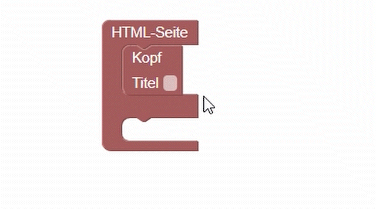
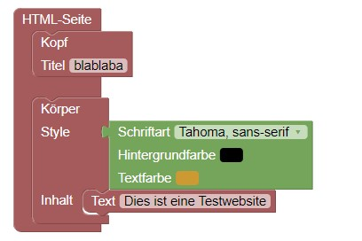

| Am Anfang jeder HTML-Seite wird erst einmal mitgeteilt, dass es sich um eine HTML-Seite handelt. Das passiert mit dem Tag < !doctype html> Anschließend beginnt jede HTML-Seite mit dem Tag < html> und endet mit dem Schlusstag < /html> So weiß der Computer, wann die Seite fertig beschrieben ist und geladen werden kann. Zwischen diesen beiden Tags befindet sich dann immer etwas anderes. Jedoch ist der grundsätzliche Aufbau erst einmal gleich. |
|||||||||
|  | Dabei stehen im Kopf Informationen über das, was im Körper bzw. auf der Website dargestellt wird. Eine der wichtigsten Informationen, die im Kopf steht und auch zwingend angegeben werden muss ist der Titel der Seite Er wird mit dem Tag < title> < /title> angegeben. |
||||||||
| Die Informationen im title sind auch das, was von Suchmaschinen wie z.B. google ausgewertet wird. Außerdem stehen hier noch technische Dinge wie Zeichencodierung, oder Viewportangaben. |
|||||||||
|  | Im Body oder auch Körper befindet sich dann das, was auf deiner Seite dargestellt werden soll.
Auf einer Schulwebsite vielleicht Bilder der Schule, Kollegium, Jahresbericht, usw. Bei einem Sammelkartenshop Bilder von Sammelkarten, Links zu Einkaufsmöglichkeiten, interessante Artikel oder ähnliches. |
||||||||
| Bei deiner HTML-Seite kannst du dir natürlich außerdem aussuchen, wie sie aussehen soll. Du kannst zum Beispiel die Hintergrundfarbe, oder die Schriftart im Body schon angeben. Das tust du, indem du im < body>-Tag zusätzlich noch einen "style" definierst, indem du zum Beispiel die Schriftart (font-family), die Hintergrundfarbe (background-color) oder die Schriftfarbe (color) mit angibst. |
|||||||||
| Der Körper nimmt den Großteil einer HTML-Seite ein. Er ist häufig in verschiedene Abschnitte unterteilt, die teilweise auch wieder unterschiedlich aussehen. Alle Blöcke, die du nach dem Grundgerüst kennenlernst, werden zumeist im Körper eingesetzt. |
|||||||||